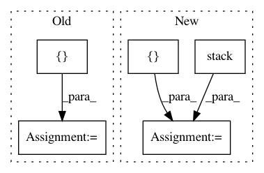

8aaabd6dfcd2f4ae5618ef08657bbba82e8bd69f,mesh_renderer/rasterize_triangles.py,,rasterize_clip_space,#,69
Before Change
batch_size = clip_space_vertices.shape[0].value
vertex_count = clip_space_vertices.shape[1].value
per_image_barycentric_coordinates = []
per_image_vertex_ids = []
for im in range(clip_space_vertices.shape[0]):
barycentric_coords, triangle_ids, _ = (
rasterize_triangles_module.rasterize_triangles(
After Change
_, per_image_barycentric_coordinates, per_image_vertex_ids = tf.while_loop(condition, iteration, [b, per_image_barycentric_coordinates, per_image_vertex_ids])
barycentric_coordinates = tf.reshape(per_image_barycentric_coordinates.stack(), [-1, 3])
vertex_ids = tf.reshape(per_image_vertex_ids.stack(), [-1, 3])
// Indexes with each pixel"s clip-space triangle"s extrema (the pixel"s
// "corner points") ids to get the relevant properties for deferred shading.
flattened_vertex_attributes = tf.reshape(attributes,
In pattern: SUPERPATTERN
Frequency: 3
Non-data size: 5
Instances
Project Name: google/tf_mesh_renderer
Commit Name: 8aaabd6dfcd2f4ae5618ef08657bbba82e8bd69f
Time: 2019-05-28
Author: david.erler@gmail.com
File Name: mesh_renderer/rasterize_triangles.py
Class Name:
Method Name: rasterize_clip_space
Project Name: tensorflow/tpu
Commit Name: 0638b9c86cfec273b2e5799aea281ffa74d9161d
Time: 2020-05-12
Author: pengchong@google.com
File Name: models/official/detection/serving/inputs.py
Class Name:
Method Name: raw_image_tensor_input
Project Name: hanxiao/bert-as-service
Commit Name: 2bfe5bfcec7759ae022b1a479411aa7d1b8401f1
Time: 2019-05-06
Author: zyn2122@gmail.com
File Name: example/example7.py
Class Name:
Method Name: